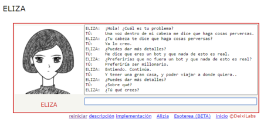
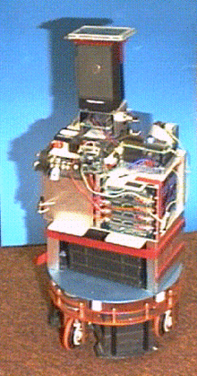

¿Que es la inteligencia artificial?
En este apartado te dare a conocer los acontecimientos más importantes que han sucedido en la historia de la Inteligencia Artificila.
 Inteligencia artificial
Inteligencia artificial
En este apartado te dare a conocer los acontecimientos más importantes que han sucedido en la historia de la Inteligencia Artificila.
| Número | Año | Descripción | ||||||||||||||||||||||||||||||||||||||||||||||||||||
| Número 1 |  1842 | Lovelace: máquina analítica programable | ||||||||||||||||||||||||||||||||||||||||||||||||||||
| Número 2 |  1950 | Turing: la prueba de Turing | ||||||||||||||||||||||||||||||||||||||||||||||||||||
| Número 3 |  1956 | McCarthy, Minsky, Rochester y Shannon celebran la primer conferencia sobre IA | ||||||||||||||||||||||||||||||||||||||||||||||||||||
| Número 4 |  1965 | Weizenbaum: "ELIZA", el primer sistema especialista | ||||||||||||||||||||||||||||||||||||||||||||||||||||
| Número 5 |  1993 | Horswill: "Polly" (robótica basada en el comportamiento) | ||||||||||||||||||||||||||||||||||||||||||||||||||||
| Número 6 |  2005 | TiVo: tecnología de recomendaciones | ||||||||||||||||||||||||||||||||||||||||||||||||||||
| Número 7 |  2011 | Apple, Google y Microsoft: aplicaciones móviles de recomendaciones | ||||||||||||||||||||||||||||||||||||||||||||||||||||
| Número 8 |  2013 | Varios: avances tecnológicos en aprendizaje automático y profundo | ||||||||||||||||||||||||||||||||||||||||||||||||||||
| Número 9 |  2016 | Google DeepMind: AlphaGo supera a Lee Sedol en el juego “Go” | ||||||||||||||||||||||||||||||||||||||||||||||||||||